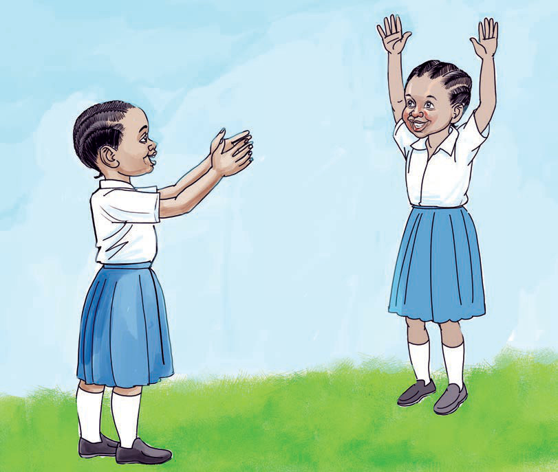

5. To win the game, you must not make a mistake.
The winner is the one who remains alone at the end of the game when all the others are out because they have made mistakes.

6. The winner is the one who remains without making a mistake until the end.